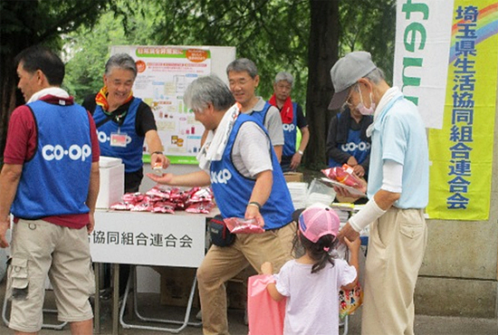
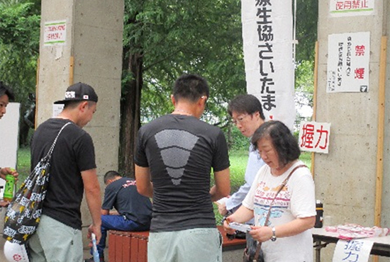
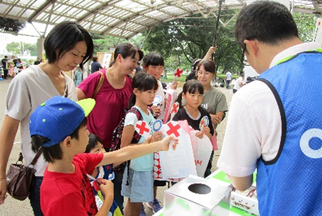
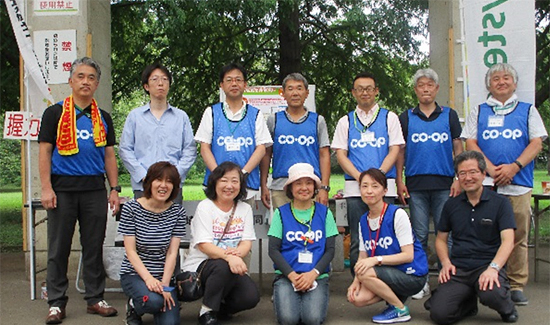

第40回九都県市合同防災訓練（埼玉県会場）報告
埼玉県との災害時協定に基づき、防災フェアに出展しました
8月31日（土）に第40回九都県市（埼玉県・千葉県・東京都・神奈川県・横浜市・川崎市・千葉市・さいたま市・相模原市）合同防災訓練（埼玉県会場）が「和光市役所周辺」を中央会場に市内各所で行なわれました。当日は、東京湾北部を震源とするM7.3の地震が発生し、和光市内で震度6強の揺れを観測、県南西部を中心に甚大な被害が発生しているとの想定のもと、住民活動訓練、救出救助訓練、災害時医療訓練、ライフライン復旧訓練、緊急救援物資輸送訓練、避難所開設・運営訓練、災害ボランティアセンター開設・運営訓練など、実践的な訓練が実施されました。
埼玉県との「基本協定」にもとづき21回目の参加
埼玉県と埼玉県生協連、コープみらいが締結している「基本協定」「物資協定」にもとづき、今回で21回目の参加となりました。大野元裕県知事や県議会関係、和光市長、市議会関係の皆さんをはじめ、消防本部、県警、医療、社協など約130機関・団体、約8,000人が参加しました。埼玉県生協連と各生協は、防災フェアでの企画に役職員15人が参加し、埼玉の生協を広くアピールすることができました。（参加生協…コープみらい、パルシステム埼玉、生活クラブ生協、医療生協さいたま、コープデリ連合会、労済生協）

飲料・菓子等配布訓練

握力チェック（医療生協さいたま）

防災クイズ（コープみらい）
訓練内容：防災フェア
埼玉県と埼玉県生協連、コープみらいが締結している「基本協定」「物資協定」にもとづき、今回で21回目の参加となりました。大野元裕県知事や県議会関係、和光市長、市議会関係の皆さんをはじめ、消防本部、県警、医療、社協など約130機関・団体、約8,000人が参加しました。埼玉県生協連と各生協は、防災フェアでの企画に役職員15人が参加し、埼玉の生協を広くアピールすることができました。（参加生協…コープみらい、パルシステム埼玉、生活クラブ生協、医療生協さいたま、コープデリ連合会、労済生協）

- 応急生活物資配布訓練として、パルシステム埼玉提供の飲料「キャロっとさん」、生活クラブ生協提供の菓子「サクサクスナック」、労済生協提供のウエットティッシュを350人に配布しました。
- 医療生協さいたまは、握力チェックを行い、130人が参加しました。
- コープみらいは「防災」に関する身近なクイズをおこない、260人が参加しました。クイズの参加者には、ミックスナッツを差し上げました。クイズは、実際に災害が起きた時にどう行動するか、家族で考えるきっかけになりました。家庭で常備しておくと便利な食品の紹介や、それらの食品を使って、電気もガスも使えない時に、水だけで戻して作る「災害食レシピ」の紹介も好評でした。